library(tidyverse)
library(janitor)
dados <- read_csv("data/sao-paulo-properties-april-2019.csv") |>
clean_names() |>
mutate(id = row_number())
set.seed(42)
dados |>
slice_sample(n=5)3 Aluguel de apartamentos na cidade de São Paulo
O objetivo desta análise é avaliar os valores de aluguel de apartamentos em diferentes regiões da cidade de São Paulo, de acordo com a sua metragem e quantidade de quartos, bem como a diferenciação de preços nos quesitos de vaga de garagem e condomínio. Construir um modelo preditivo que seja capaz de prever o valor de aluguel de um imóvel dadas as suas caracteristicas.
Este conjunto de dados contém cerca de 13.000 imóveis para venda e aluguel na cidade de São Paulo, Brasil. Os dados são provenientes de várias fontes, especialmente sites classificados de imóveis.
O conjunto de dados representa propriedades anunciadas no mês de abril de 2019 e contém as seguintes informações para cada propriedade:
- Price: Preço final anunciado (em real),
- Condo: Despesas do condomínio,
- Size: tamanho da propriedade em metros quadrados \(m^2\) (apenas áreas privadas),
- Rooms: Número de quartos,
- Toilets: Número de banheiros,
- Suites: Número de quartos com banheiro privativo,
- Parking: Número de vagas de estacionamento,
- Elevator: binário: 1 se houver elevador no prédio, 0 caso contrário,
- Furnished: 1 se a propriedade é mobiliada, 0 caso contrário,
- Swimming Pool: 1 se a propriedade tiver piscina, 0 caso contrário,
- New: 1 se a propriedade for muito recente, 0 caso contrário,
- District: bairro e a cidade onde a propriedade está localizada, ei: Itaim Bibi / - São Paulo,
- Negotiation Type: Venda ou Aluguel,
- Property Type: tipo de propriedade,
- Latitude: Localização-Latitude,
- Longitude: Localização - Longitude.
O código abaixo carrega e exibe uma amostra dos dados.
| price | condo | size | rooms | toilets | suites | parking | elevator | furnished | swimming_pool | new | district | negotiation_type | property_type | latitude | longitude | id |
|---|---|---|---|---|---|---|---|---|---|---|---|---|---|---|---|---|
| 6900 | 1590 | 188 | 4 | 3 | 2 | 2 | 0 | 0 | 1 | 0 | Vila Mariana/São Paulo | rent | apartment | -23.59246 | -46.62818 | 10801 |
| 1150000 | 0 | 130 | 3 | 4 | 3 | 3 | 0 | 0 | 0 | 0 | Mandaqui/São Paulo | sale | apartment | -23.47766 | -46.63248 | 12261 |
| 2200 | 269 | 35 | 1 | 1 | 0 | 0 | 0 | 1 | 0 | 0 | Consolação/São Paulo | rent | apartment | -23.54836 | -46.64516 | 2369 |
| 9500 | 1800 | 169 | 3 | 5 | 3 | 3 | 0 | 0 | 0 | 0 | Brooklin/São Paulo | rent | apartment | -23.62416 | -46.68503 | 5273 |
| 5500 | 2990 | 196 | 4 | 3 | 1 | 3 | 1 | 0 | 1 | 0 | Santa Cecília/São Paulo | rent | apartment | -23.54057 | -46.65818 | 9290 |
DicaDica
O codigo acima usou a função clean_names() do pacote janitor que tem por objetivo padronizar os nomes das variáveis presentes no conjunto de dados, deixando todas letras minusculas e separadores são transformados em underscore (_). Esta é uma boa prática de programação.
3.1 Análise Descritiva Inicial
Inicialmente, vamos ver os tipos de propriedades existentes na base de dados.
dados |>
group_by(property_type) |>
count()| property_type | n |
|---|---|
| apartment | 13640 |
Agora vamos analisar os diferentes tipos de negociação.
dados |>
group_by(negotiation_type) |>
summarize(prop = n() / nrow(dados), mean_price = mean(price))| negotiation_type | prop | mean_price |
|---|---|---|
| rent | 0.529912 | 3077.669 |
| sale | 0.470088 | 608624.140 |
Por se tratar de problemas distintos (aluguel e venda), vamos considerar apenas imóveis disponíveis para aluguel. Alem disso, vamos desconsiderar as variáveis district (por questão de simplicidade do modelo), property_type por ser todas de apartamento e a variável negotiation_type, pois, após essa filtragem, restarão apenas imóveis para aluguel.
dados_aluguel <- dados |>
filter(negotiation_type == "rent") |>
select(-negotiation_type, -district, -property_type)library(geobr)
# obter código IBGE do município
cod <- geobr::lookup_muni(name_muni = "São Paulo")$code_muni
municipio_sp <- geobr::read_municipality(code_muni = cod,
simplified = T,
showProgress = F)Abaixo estão as informações sobre as coordenadas do mapa da cidade de São Paulo:
municipio_spSimple feature collection with 1 feature and 4 fields
Geometry type: MULTIPOLYGON
Dimension: XY
Bounding box: xmin: -46.82619 ymin: -24.00826 xmax: -46.36531 ymax: -23.35629
Geodetic CRS: SIRGAS 2000
code_muni name_muni code_state abbrev_state geom
563 3550308 São Paulo 35 SP MULTIPOLYGON (((-46.57547 -...Agora veja as latitudes e longitudes presentes no mapa. Claramente há imóveis com algum problema na localização. Vamos retirar esses imóveis da nossa base.
dados_aluguel |> select(latitude,longitude) |> summary() latitude longitude
Min. :-46.75 Min. :-58.36
1st Qu.:-23.60 1st Qu.:-46.69
Median :-23.56 Median :-46.64
Mean :-22.03 Mean :-43.50
3rd Qu.:-23.52 3rd Qu.:-46.59
Max. : 0.00 Max. : 0.00 dados_aluguel <- dados_aluguel |>
filter(longitude <= -46.36531,
longitude >= -46.82619,
latitude <= -23.35629,
latitude >= -24.00826)Agora, vamos construir um gráfico que mostra o mapa da cidade e a localização dos imóveis considerados nesta análise. Para isso, temos que representar o dataframe no formato sf. Essa classe é usada para representar dados geográficos, especificamente aqueles que contêm informações espaciais (como coordenadas latitude e longitude). A classe faz parte do pacote sf (Simple Features), que oferece uma maneira simples e eficiente de lidar com dados espaciais no R.
dados_aluguel_sf <- sf::st_as_sf(x = dados_aluguel,
coords = c("longitude", "latitude"),
crs = "+proj=longlat +datum=WGS84 +no_defs +ellps=WGS84 +towgs84=0,0,0")
ggplot(dados_aluguel_sf) +
geom_sf(data = municipio_sp)+
geom_sf(alpha = .05) +
ggthemes::theme_map() +
ggtitle("Localização dos Imóveis na Cidade de São Paulo") 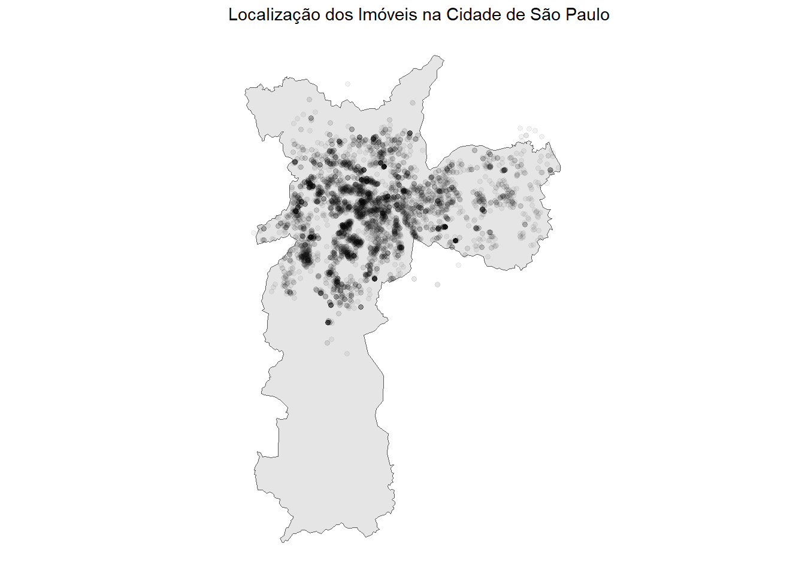
Abaixo apresentamos a análise gráfica dos dados, com o objetivo de investigar a relação entre as preditoras e o valor de aluguel (variável price).
dados_aluguel |>
group_by(rooms) |>
summarise(price = mean(price)) |>
ggplot(aes(rooms, price)) +
geom_col() +
scale_y_continuous(expand = expansion(mult = c(0, .05))) +
scale_x_continuous(breaks = c(1:10)) +
labs(title = "Preço médio de aluguel por quantidade de quartos",
x = "Quartos",
y = "Preço médio")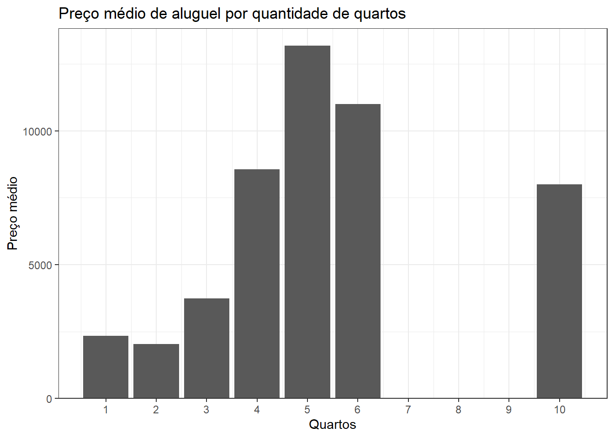
dados_aluguel |>
group_by(rooms) |>
summarise(perc = 100 * n()/nrow(dados_aluguel))| rooms | perc |
|---|---|
| 1 | 15.3502235 |
| 2 | 45.2757079 |
| 3 | 32.2056632 |
| 4 | 6.9448584 |
| 5 | 0.1788376 |
| 6 | 0.0298063 |
| 10 | 0.0149031 |
dados_aluguel |>
group_by(toilets) |>
summarise(price = mean(price)) |>
ggplot(aes(x = toilets, y = price)) +
geom_col()+#stat="identity", width=0.5) +
labs(title = "Preço médio de aluguel por quantidade de banheiros",
x = "Banheiros",
y = "Preço médio") +
scale_y_continuous(expand = expansion(mult = c(0, .05))) +
scale_x_continuous(breaks = c(1:10))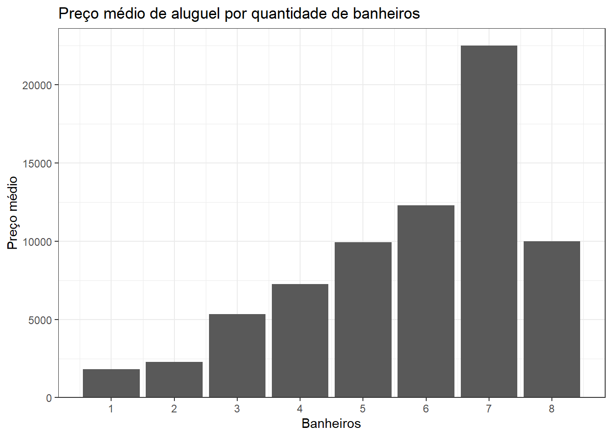
dados_aluguel |>
group_by(toilets) |>
summarise(perc = 100 * n()/nrow(dados_aluguel))| toilets | perc |
|---|---|
| 1 | 20.7004471 |
| 2 | 61.0581222 |
| 3 | 6.9150522 |
| 4 | 7.0342772 |
| 5 | 3.5916542 |
| 6 | 0.5663189 |
| 7 | 0.1043219 |
| 8 | 0.0298063 |
dados_aluguel |>
group_by(suites) |>
summarise(price = mean(price)) |>
ggplot(aes(x = suites, y = price)) +
geom_bar(stat="identity", width=0.5) +
labs(title = "Preço médio de aluguel por quantidade de suites",
x = "Suites",
y = "Preço médio") +
scale_y_continuous(expand = expansion(mult = c(0, .05))) +
scale_x_continuous(breaks = c(0:10))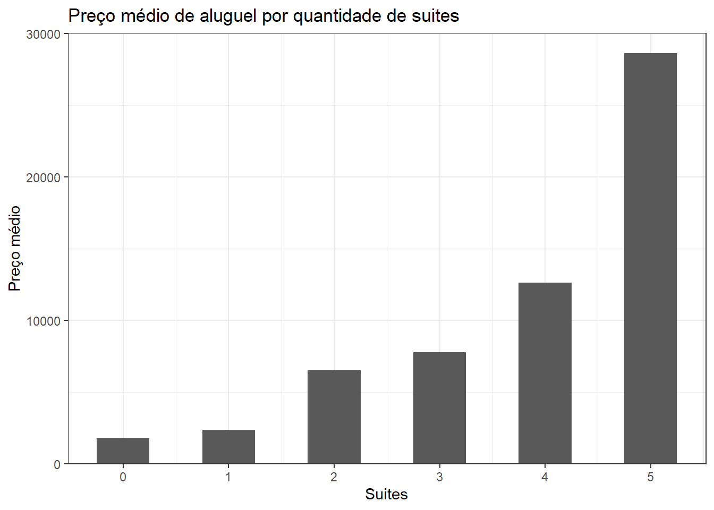
dados_aluguel |>
group_by(suites) |>
summarise(perc = 100 * n()/nrow(dados_aluguel))| suites | perc |
|---|---|
| 0 | 21.0879285 |
| 1 | 64.2771982 |
| 2 | 4.9776453 |
| 3 | 7.3621461 |
| 4 | 2.2503726 |
| 5 | 0.0447094 |
dados_aluguel |>
group_by(parking) |>
summarise(price = mean(price)) |>
ggplot(aes(parking, price)) +
geom_bar(stat="identity", width=0.5) +
labs(title = "Preço médio de aluguel por quantidade de vagas estacionamento",
x = "Estacionamento",
y = "Preço médio") +
scale_y_continuous(expand = expansion(mult = c(0, .05))) +
scale_x_continuous(breaks = c(0:10))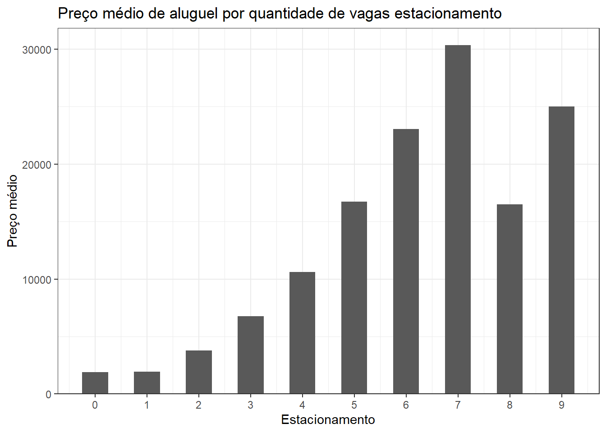
dados_aluguel |>
group_by(parking) |>
summarise(perc = 100 * n()/nrow(dados_aluguel))| parking | perc |
|---|---|
| 0 | 3.5916542 |
| 1 | 62.7719821 |
| 2 | 22.3695976 |
| 3 | 7.3919523 |
| 4 | 2.9657228 |
| 5 | 0.6855440 |
| 6 | 0.1341282 |
| 7 | 0.0447094 |
| 8 | 0.0298063 |
| 9 | 0.0149031 |
ggplot(dados_aluguel,
aes(x=swimming_pool, y=price, group=swimming_pool)) +
geom_boxplot() +
labs(title = "Distribuição do preço de aluguel por existência de piscina",
x = "Piscina",
y = "Preço médio (escala logarítimica)") +
scale_y_continuous(expand = expansion(mult = c(0, .05))) +
scale_x_continuous(breaks = c(0:1)) +
scale_y_log10()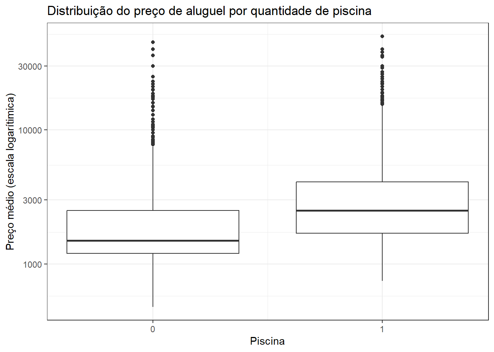
dados_aluguel |>
group_by(swimming_pool) |>
summarise(perc = 100 * n()/nrow(dados_aluguel))| swimming_pool | perc |
|---|---|
| 0 | 50.99851 |
| 1 | 49.00149 |
ggplot(dados_aluguel,
aes(x=furnished, y=price, group=furnished)) +
geom_boxplot() +
labs(title = "Distribuição de preço médio de aluguel por status de mobiliado",
x = "Mobiliado",
y = "Preço médio (escala logarítimica)") +
scale_y_continuous(expand = expansion(mult = c(0, .05))) +
scale_x_continuous(breaks = c(0:10)) +
scale_y_log10()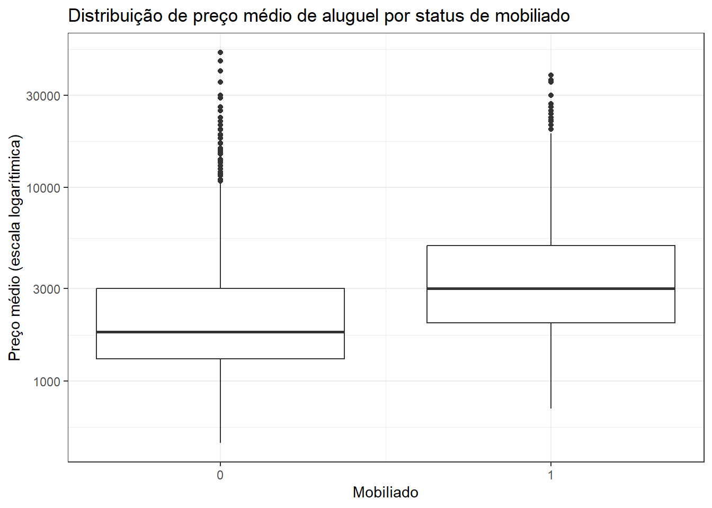
dados_aluguel |>
group_by(furnished) |>
summarise(perc = 100 * n()/nrow(dados_aluguel))| furnished | perc |
|---|---|
| 0 | 82.48882 |
| 1 | 17.51118 |
AvisoAtenção
Os dois últimos gráficos de boxplot apresentam o eixo-y na escala logarítimica. Essa abordagem é útil especialmente quando os valores discrepantes (outliers) estão muito acima (ou abaixo) dos valores que estão próximos à média, mediana e o intervalo interquartílico.
3.2 Separação dos dados
str(dados_aluguel)tibble [6,710 × 14] (S3: tbl_df/tbl/data.frame)
$ price : num [1:6710] 930 1000 1000 1000 1300 1170 1000 900 1000 1000 ...
$ condo : num [1:6710] 220 148 100 200 410 0 180 150 0 0 ...
$ size : num [1:6710] 47 45 48 48 55 50 52 40 65 100 ...
$ rooms : num [1:6710] 2 2 2 2 2 2 1 2 2 2 ...
$ toilets : num [1:6710] 2 2 2 2 2 2 2 2 2 2 ...
$ suites : num [1:6710] 1 1 1 1 1 1 1 1 1 1 ...
$ parking : num [1:6710] 1 1 1 1 1 1 1 1 1 1 ...
$ elevator : num [1:6710] 0 0 0 0 1 0 1 0 0 0 ...
$ furnished : num [1:6710] 0 0 0 0 0 0 0 0 0 0 ...
$ swimming_pool: num [1:6710] 0 0 0 0 0 0 0 0 0 0 ...
$ new : num [1:6710] 0 0 0 0 0 0 0 0 0 0 ...
$ latitude : num [1:6710] -23.5 -23.6 -23.5 -23.5 -23.5 ...
$ longitude : num [1:6710] -46.5 -46.5 -46.5 -46.5 -46.5 ...
$ id : int [1:6710] 1 2 3 4 5 6 7 8 9 10 ...dados_aluguel <- dados_aluguel |>
mutate(rooms = if_else(rooms >= 5, "5+", as.character(rooms))) |>
mutate(rooms = as.factor(rooms),
toilets = as.factor(toilets),
furnished = as.factor(furnished),
swimming_pool = as.factor(swimming_pool))Vamos considerar apenas os dados referentes à aluguel, totalizando 7228 observações.
library(rsample)
set.seed(123)
split_treino_teste <- initial_split(dados_aluguel, 0.8)
split_treino_validacao <- initial_split(training(split_treino_teste), 0.8)
dados_treinamento <- training(split_treino_validacao)
dados_validacao <- testing(split_treino_validacao)
dados_teste <- testing(split_treino_teste)3.3 Treinamento de Modelos
Nesta análise, abordaremos três modelos: regressão linear, árvore de decisão e floresta aleatória. Os dados já foram divididos em conjuntos de treinamento, validação e teste. Cada um dos três modelos será treinado utilizando o conjunto de treinamento A métrica de erro RMSE será calculada usando o conjunto de validação. Com isso, poderemos selecionar o melhor modelo, aquele que apresentar o menor erro no conjunto de validação. Após a escolha do melhor modelo, iremos reestimá-lo utilizando todos os dados dos conjuntos de treinamento e validação combinados. Em seguida, avaliaremos o erro deste modelo final no conjunto de teste, fornecendo uma boa estimativa do erro de generalização esperado para este modelo em novos dados.
3.3.1 Modelo de Regressão Linear
Vamos aplicar o modelo de regressão linear ao conjunto de treinamento e avaliá-lo utilizando o conjunto de validação.
mod_linear <- lm(price ~ ., dados_treinamento |> select(-id))
pred_linear <- predict(mod_linear, dados_validacao)
df_pred <- tibble(id = dados_validacao$id,
y_obs = dados_validacao$price,
y_pred = pred_linear,
modelo = "linear")O gráfico abaixo apresenta o resultado do modelo de regressão linear aplicado aos dados. Cada ponto no gráfico representa uma observação do valor do aluguel, sendo o eixo x o valor observado e o eixo y o valor predito pelo modelo. A linha vermelha indica a linha de igualdade, onde os valores observados são iguais aos valores preditos. Idealmente, os pontos devem estar alinhados ao longo dessa linha, indicando uma boa predição do modelo.
df_pred |>
ggplot(aes(y_obs, y_pred)) +
geom_abline(slope = 1, intercept = 0, color = "salmon", size = 2) +
geom_point(alpha = 0.1) +
labs(title = "Modelo de Regressão Linear - Resultado",
x = "Valor do Aluguel Observado",
y = "Valor do Aluguel Predito")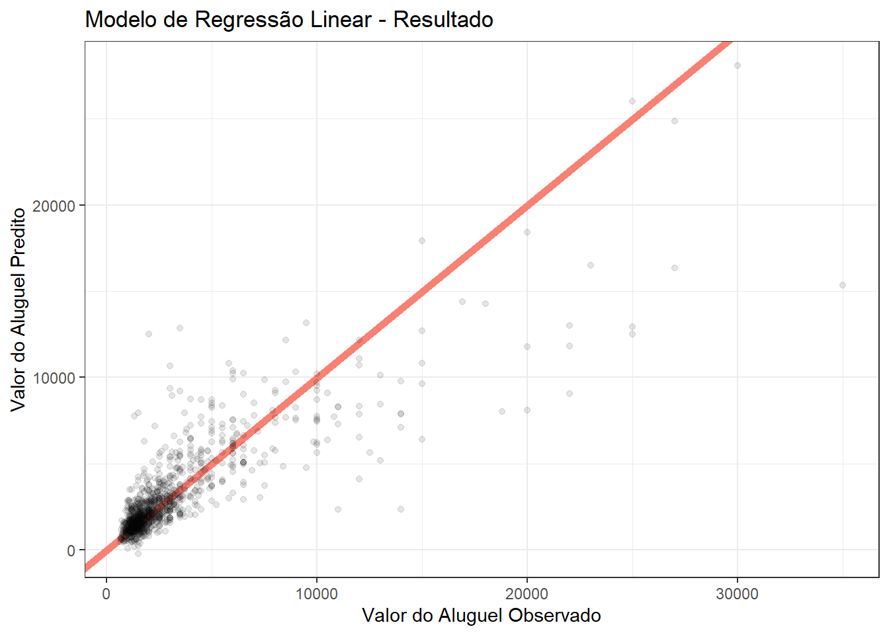
3.3.2 Modelo de Árvore de Decisão
Vamos aplicar o modelo de árvore de decisão ao conjunto de treinamento e avaliá-lo utilizando o conjunto de validação.
library(rpart)
mod_arvore <- rpart(price ~ ., dados_treinamento |> select(-id))
rpart.plot::rpart.plot(mod_arvore)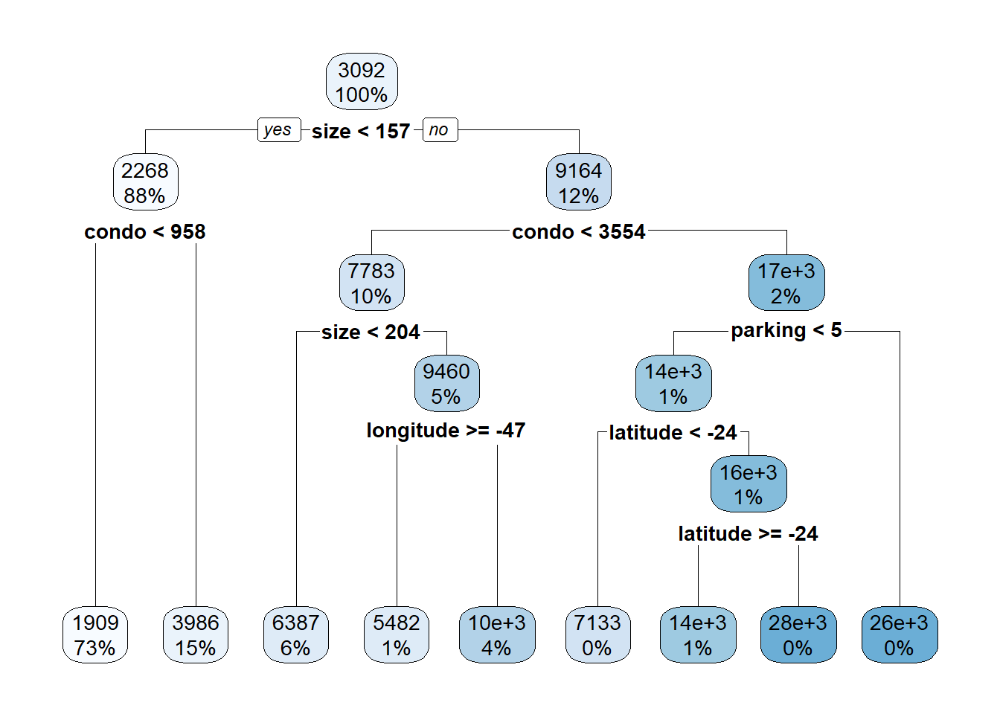
A árvore de decisão gerada para prever o valor do aluguel (price), utilizando os dados de treinamento, é visualizada acima. Cada nó na árvore representa uma decisão baseada em uma característica do imóvel, e os ramos indicam o resultado dessa decisão, levando a novas decisões ou a um valor de aluguel previsto (nós folha). A porcentagem em cada nó indica a proporção de observações do conjunto de treinamento que se enquadram naquele critério.
Nó Raiz (Topo da Árvore): Representa todas as 3132 observações do conjunto de treinamento (100%). A primeira e mais significativa divisão é baseada no
size(tamanho do imóvel em \(m^2\)). A condição ésize < 204.Ramo da Esquerda (
size < 204- “yes”):- Este caminho é seguido por 94% dos imóveis.
- A próxima divisão importante neste ramo é
condo < 1031(valor do condomínio).- Se
condo < 1031(“yes”, 76% do total de imóveis): O modelo prevê um aluguel médio de 1963. Este grupo é novamente dividido porsize < 91.- Para
size < 91(“yes”, 68% do total): O aluguel previsto é 1807. - Para
size >= 91(“no”, 8% do total): O aluguel previsto é 3292.
- Para
- Se
condo >= 1031(“no”, 18% do total de imóveis): O modelo prevê um aluguel médio de 4977. Este grupo é subsequentemente dividido porsuites < 2.- Para
suites < 2(“yes”, 11% do total): O aluguel previsto é 4055. - Para
suites >= 2(“no”, 8% do total): O aluguel previsto é 6300.
- Para
- Se
Ramo da Direita (
size >= 204- “no”):- Este caminho é seguido por apenas 6% dos imóveis, que tendem a ter um valor de aluguel previsto inicial mais alto (o nó indica 12e+3, ou seja, R$ 12.000).
- A primeira divisão neste ramo é
condo < 4262.- Se
condo < 4262(“yes”, 5% do total de imóveis, com valor base de 11e+3): A árvore segmenta com base nalongitude >= -47.- Se
longitude >= -47(“yes”, 4% do total, valor base 12e+3): Novas divisões ocorrem porfurnished = 0(imóvel não mobiliado) e, em seguida, porsize < 268.- Para imóveis não mobiliados (
furnished = 0, 1% do total, valor base 15e+3):- Se
size < 268: Aluguel previsto de 13e+3 (1% do total). - Se
size >= 268: Aluguel previsto de 24e+3 (0% do total, indicando uma fração pequena).
- Se
- Para imóveis mobiliados (
furnished = 1, o ramo “no” da condiçãofurnished = 0, 3% do total): Aluguel previsto de 11e+3.
- Para imóveis não mobiliados (
- Se
longitude < -47(“no”, 1% do total): O aluguel previsto é 5680.
- Se
- Se
condo >= 4262(“no”, 1% do total de imóveis, com valor base de 20e+3): A árvore divide porlongitude < -47.- Se
longitude < -47(“yes”, 0% do total): Aluguel previsto de 4929. - Se
longitude >= -47(“no”, 1% do total, valor base 22e+3): Uma última divisão porlongitude >= -47(provavelmente refinando a faixa) leva a:- Aluguel previsto de 28e+3 (0% do total) se
longitude >= -47(“yes”). - Aluguel previsto de 18e+3 (0% do total) se
longitude < -47(“no”).
- Aluguel previsto de 28e+3 (0% do total) se
- Se
- Se
Observações sobre a árvore de decisão:
- A variável
size(tamanho do imóvel) é a mais discriminatória, aparecendo no topo da árvore e sendo usada para a primeira grande divisão dos dados. condo(valor do condomínio) é a segunda variável mais importante, utilizada para refinar as previsões em ambos os ramos principais.- Variáveis como
suites(número de suítes),longitude(localização geográfica) efurnished(mobiliado) aparecem em níveis inferiores, ajudando a detalhar as previsões para subconjuntos mais específicos de imóveis. - Os nós folha (terminais) indicam o valor médio de aluguel previsto para os imóveis que seguem aquele caminho específico de decisões, juntamente com a porcentagem de imóveis do conjunto de treinamento que se enquadram nesse nó.
- A cor dos nós (geralmente mais escura para valores mais altos, dependendo da configuração do
rpart.plot) também oferece uma indicação visual da faixa de preço prevista.
Esta estrutura hierárquica de decisões permite que o modelo de árvore de decisão estime o valor do aluguel com base nas características mais relevantes do imóvel.
pred_arvore <- predict(mod_arvore, dados_validacao)
df_pred <- df_pred |>
bind_rows(tibble(id = dados_validacao$id,
y_obs = dados_validacao$price,
y_pred = pred_arvore,
modelo = "árvore"))
df_pred |>
filter(modelo == "árvore") |>
ggplot(aes(y_obs, y_pred)) +
geom_abline(slope = 1, intercept = 0, color = "lightgreen", size = 2) +
geom_point(alpha = 0.1) +
labs(title = "Modelo de Árvore de Decisão - Resultado",
x = "Valor do Aluguel Observado",
y = "Valor do Aluguel Predito")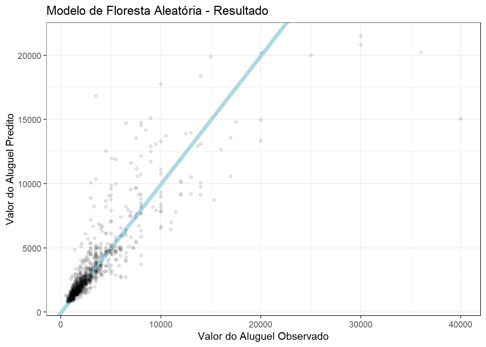
DicaDica
Observe que os valores preditos pela árvore de decisão apresentam um padrão (linhas horizontais) por conta da forma como o modelo é construído!
3.3.3 Modelo de Floresta Aleatória
Vamos aplicar o modelo de floresta aleatória ao conjunto de treinamento e avaliá-lo utilizando o conjunto de validação.
library(randomForest)
mod_floresta <- randomForest(price ~ ., data = dados_treinamento)
pred_floresta <- predict(mod_floresta, dados_validacao)
df_pred <- df_pred |>
bind_rows(tibble(id = dados_validacao$id,
y_obs = dados_validacao$price,
y_pred = pred_floresta,
modelo = "floresta aleatória"))
df_pred |>
filter(modelo == "floresta aleatória") |>
ggplot(aes(y_obs, y_pred)) +
geom_abline(slope = 1, intercept = 0, color = "lightblue", size = 2) +
geom_point(alpha = 0.1) +
labs(title = "Modelo de Floresta Aleatória - Resultado",
x = "Valor do Aluguel Observado",
y = "Valor do Aluguel Predito")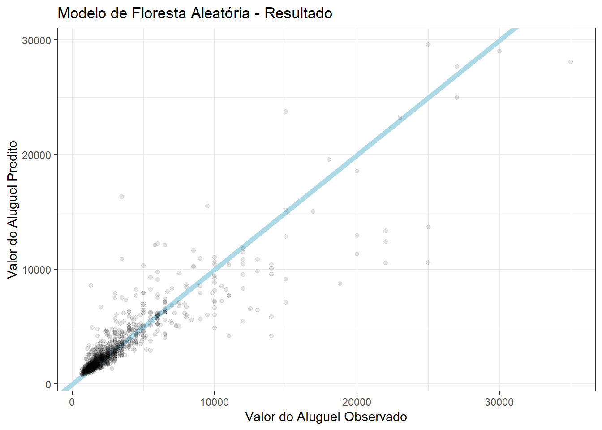
Comparativo da performance dos modelos na validacao
Veja na tabela abaixo os valores preditos por cada modelo para cada observação do conjunto de validação. São esses valores que serão utilizados para calcular o erro de cada modelo e, consequentemente, escolher o melhor entre eles.
df_pred |>
pivot_wider(names_from = modelo, values_from = y_pred) |>
slice_sample(n = 20)| id | y_obs | linear | árvore | floresta aleatória |
|---|---|---|---|---|
| 1986 | 3000.00 | 4127.40 | 3986.21 | 4762.06 |
| 3486 | 1100.00 | 1057.87 | 1908.76 | 1066.24 |
| 9690 | 1200.00 | 1206.58 | 1908.76 | 1039.94 |
| 279 | 850.00 | 496.77 | 1908.76 | 1063.05 |
| 2231 | 10000.00 | 6100.72 | 6386.85 | 5933.66 |
| 1362 | 2200.00 | 3273.67 | 3986.21 | 3835.68 |
| 3140 | 1300.00 | 936.59 | 1908.76 | 1101.66 |
| 9936 | 10000.00 | 7509.27 | 6386.85 | 8071.05 |
| 10049 | 2200.00 | 3563.41 | 3986.21 | 2256.28 |
| 10816 | 3500.00 | 2087.02 | 1908.76 | 2499.83 |
| 3423 | 10000.00 | 9237.81 | 6386.85 | 8561.74 |
| 9540 | 1600.00 | 2681.51 | 1908.76 | 2164.37 |
| 4576 | 1600.00 | 1406.34 | 1908.76 | 2070.93 |
| 1167 | 1190.00 | 2293.15 | 1908.76 | 1449.59 |
| 2120 | 2900.00 | 2292.75 | 1908.76 | 2571.46 |
| 1003 | 5000.00 | 8249.61 | 5481.60 | 7498.46 |
| 1808 | 1400.00 | 1461.32 | 1908.76 | 1872.26 |
| 10746 | 4500.00 | 7308.80 | 6386.85 | 7691.45 |
| 10051 | 4100.00 | 5158.88 | 3986.21 | 4943.05 |
| 850 | 6500.00 | 5072.03 | 6386.85 | 6022.65 |
Observando a tabela abaixo, que compara os modelos com base no erro quadrático médio (EQM) e na raiz do erro quadrático médio (REQM) no conjunto de validação, observamos que a floresta aleatória obteve o menor EQM e REQM.
df_pred |>
mutate(eq = (y_obs-y_pred)^2) |>
group_by(modelo) |>
summarise(eqm = mean(eq)/n()) |>
mutate(reqm = sqrt(eqm)) |>
arrange(reqm)| modelo | eqm | reqm |
|---|---|---|
| floresta aleatória | 2503.626 | 50.03624 |
| linear | 3560.892 | 59.67321 |
| árvore | 4122.845 | 64.20938 |
Veja de forma gráfica os valores da tabela acima.
df_pred |>
mutate(eq = (y_obs - y_pred)^2) |>
group_by(modelo) |>
summarise(eqm = mean(eq) / n()) |>
mutate(reqm = sqrt(eqm)) |>
arrange(reqm) |>
ggplot(aes(x = factor(modelo, levels = modelo), y = reqm, fill = modelo)) +
geom_col(show.legend = FALSE) +
scale_fill_manual(values = c("floresta aleatória" = "lightblue",
"árvore" = "lightgreen",
"linear" = "salmon")) +
scale_y_continuous(expand = expansion(mult = c(0, .05))) +
labs(x = NULL, y = "Raiz do Erro Quadrático Médio",
title = "Erro no Conjunto de Validação")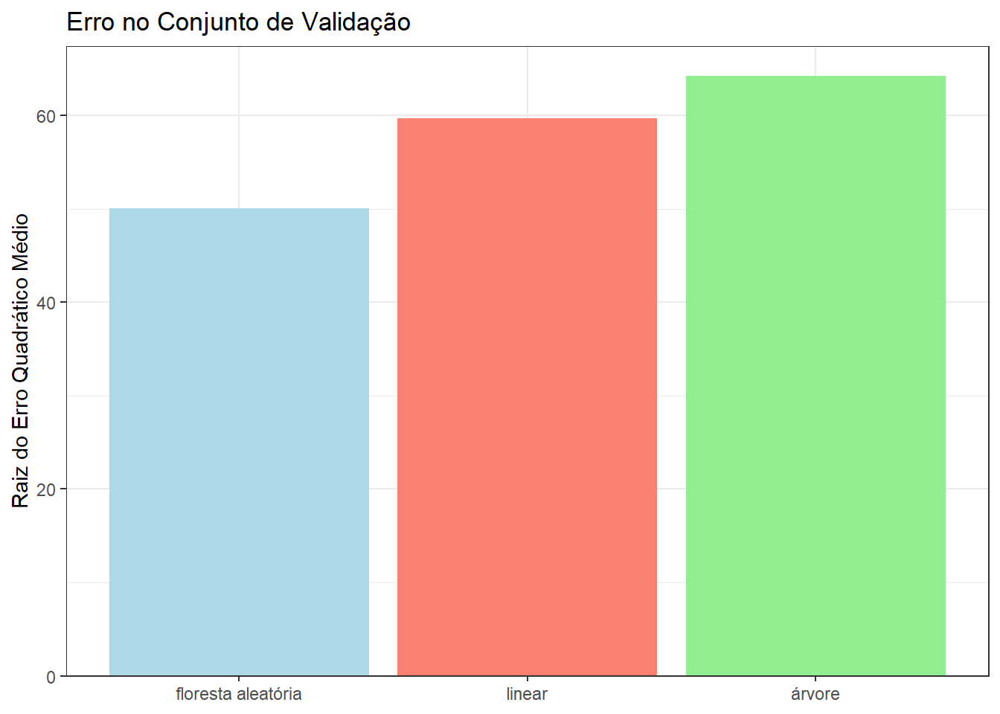
Veja que o modelo que apresentou o menor erro no conjunto de validação é o modelo de floresta aleatória
3.4 Cálculo do erro de generalização
Vamos agora refazer a estimação do melhor modelo utilizando o conjunto de treinamento e validação combinados. Em seguida, vamos avaliar o erro de generalização no conjunto de testes.
novo_treinamento <- dados_treinamento |>
bind_rows(dados_validacao)
mod_floresta_final <- randomForest(price ~ ., data = novo_treinamento)
pred_floresta <- predict(mod_floresta_final, dados_teste)
pred_final <- tibble(y_obs = dados_teste$price,
y_pred = pred_floresta,
modelo = "floresta aleatória")Os resultados estão apresentados na tabela abaixo. Observe que, de acordo com nossas estimativas, espera-se um erro médio de R$48.17 com este modelo.
pred_final |>
mutate(eq = (y_obs-y_pred)^2) |>
summarise(eqm = mean(eq)/n()) |>
mutate(reqm = sqrt(eqm))| eqm | reqm |
|---|---|
| 2320.102 | 48.16744 |
3.5 Importância das Variáveis
Ao avaliar a importância das variáveis em um modelo de regressão, como a floresta aleatória utilizada neste estudo, podemos identificar quais características são mais influentes na previsão do valor de aluguel dos imóveis. Isso é fundamental para entender o comportamento do modelo e validar se as variáveis mais importantes fazem sentido do ponto de vista do domínio do problema. A análise da importância das variáveis pode ser feita usando o gráfico gerado pelo pacote vip, que exibe as variáveis mais relevantes para a previsão, como mostrado abaixo.
library(vip)
vip(mod_floresta_final) +
labs(y = "Importância")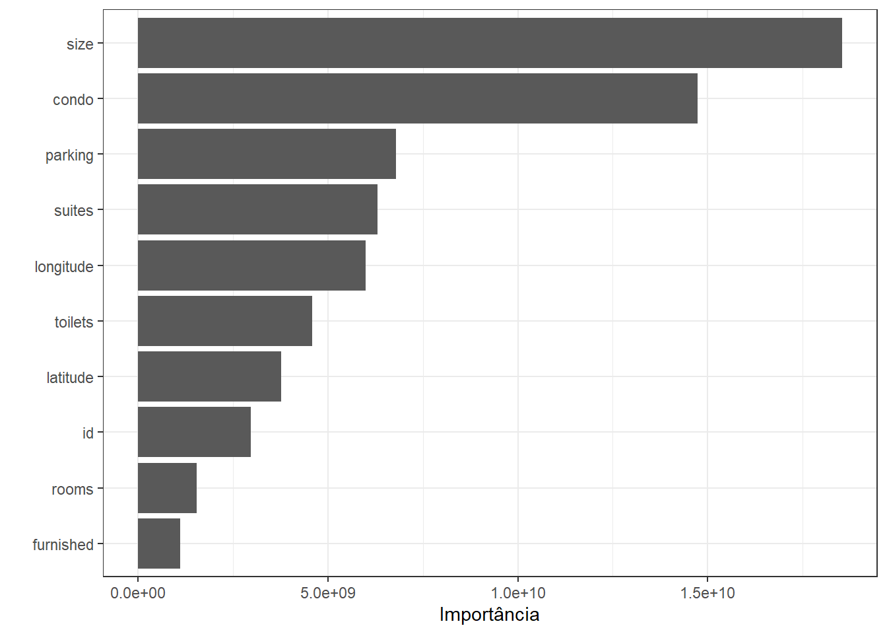
A análise da importância das variáveis revela quais características dos imóveis mais influenciam o valor do aluguel, conforme indicado pelo modelo de floresta aleatória.
- Size (Tamanho do Imóvel):
- A variável mais importante, indicando que a metragem quadrada é o principal fator determinante do valor do aluguel. Imóveis maiores têm aluguéis mais altos devido ao espaço adicional.
- Condo (Condomínio):
- A segunda variável mais influente, mostrando que o valor do condomínio está fortemente correlacionado com o custo total mensal do imóvel. Condominios mais altos geralmente indicam mais serviços ou comodidades.
- Parking (Vagas de Estacionamento):
- A disponibilidade de vagas de estacionamento é um fator importante, especialmente em uma cidade grande como São Paulo, onde ter estacionamento é um diferencial que agrega valor.
- Longitude:
- A posição geográfica leste-oeste influencia os valores de aluguel, indicando variações de preços entre diferentes regiões da cidade.
- Suites (Quartos com Banheiro Privativo):
- A presença de suítes aumenta o valor do aluguel, refletindo a valorização de imóveis que oferecem mais conforto e privacidade.
- Latitude:
- Assim como a longitude, a latitude também é um fator relevante, sugerindo que a proximidade a áreas específicas ou infraestruturas impacta o valor.
- Toilets (Banheiros):
- O número de banheiros é importante, pois imóveis com mais banheiros costumam ser mais valorizados.
- Rooms (Quartos):
- O número de quartos influencia o valor do aluguel, mas com menor impacto em comparação ao tamanho ou às suítes, indicando que a qualidade e o espaço são mais valorizados.
- Furnished (Mobiliado):
- Ter o imóvel mobiliado é menos determinante, sugerindo que os inquilinos priorizam características estruturais e localização.
- Swimming Pool (Piscina):
- A presença de piscina é a variável de menor importância, indicando que, apesar de ser um atrativo, não é um fator decisivo para a maioria dos inquilinos.
Em geral, o gráfico de importância das variáveis mostra que características estruturais (como metragem, condomínio e estacionamento) e localização são os principais fatores que determinam o valor do aluguel.
Os gráficos de Dependência Parcial (PDP) gerados permitem visualizar o efeito isolado de cada variável sobre a predição do valor do aluguel, mantendo todas as outras variáveis constantes. Abaixo está a interpretação dos gráficos gerados para as variáveis size, condo, parking e rooms.
library(pdp)
g1 <- mod_floresta_final |>
partial(pred.var = "size") |>
ggplot(aes(size, yhat)) +
geom_line() +
labs(x = "Size", y = "Price (pred)")
g2 <- mod_floresta_final |>
partial(pred.var = "condo") |>
ggplot(aes(condo, yhat)) +
geom_line() +
labs(x = "Condo", y = "Price (pred)")
g3 <- mod_floresta_final |>
partial(pred.var = "parking") |>
mutate(parking = as.factor(parking)) |>
ggplot(aes(parking, yhat)) +
geom_col() +
labs(x = "Parking", y = "Price (pred)")
g4 <- mod_floresta_final |>
partial(pred.var = "rooms") |>
mutate(rooms = as.factor(rooms)) |>
ggplot(aes(rooms, yhat)) +
geom_col() +
labs(x = "Rooms", y = "Price (pred)")
library(patchwork)
g1 + g2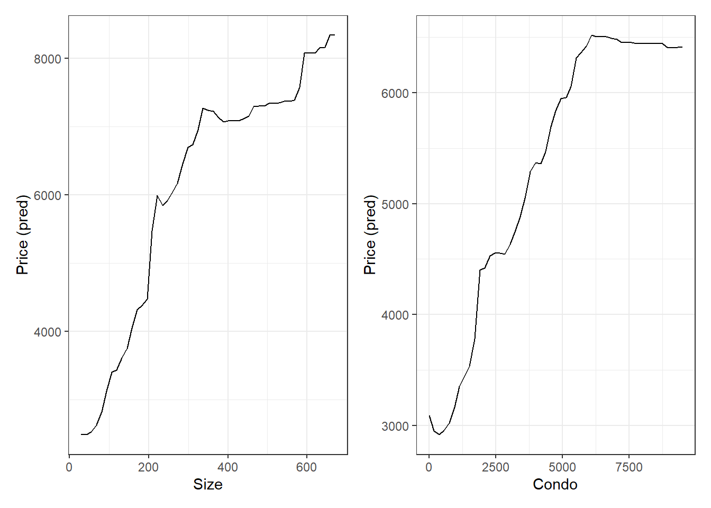
g3 + g4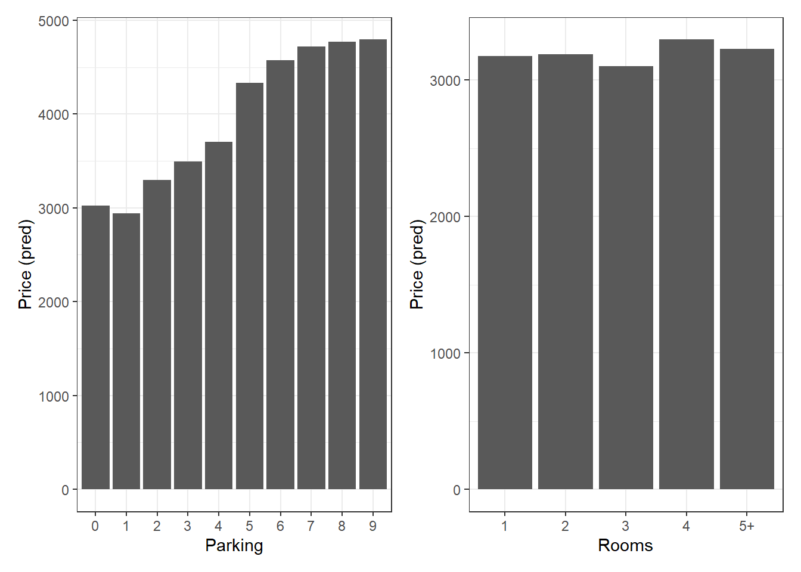
3.6 Conclusão
Neste estudo, exploramos um conjunto de dados de imóveis para venda e aluguel na cidade de São Paulo, buscando construir um modelo preditivo para estimar o valor do aluguel com base em suas características. Experimentamos três modelos diferentes - regressão linear, árvore de decisão e floresta aleatória - e observamos que a floresta aleatória apresentou o melhor desempenho, com o menor erro quadrático médio no conjunto de validação. Isso sugere que a floresta aleatória é uma boa escolha para este problema específico, embora seja importante considerar a complexidade do modelo e a interpretabilidade dos resultados ao tomar decisões finais sobre a implementação prática.